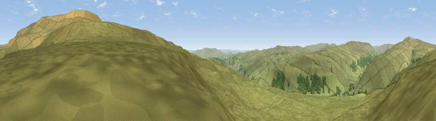

Viewpoint near Kettlewell
#11739 in England · top 19% of its area beats it · near KettlewellThe view, rendered

A 360° render of this exact spot computed from the terrain model, tree cover and land cover — summer colours, afternoon light, calibrated against photographs of famous viewpoints. Real trees, hedges and buildings will differ in detail.
The panorama
Grey silhouette: terrain skyline in each direction (720 bearings, Earth curvature and refraction included). Dashed green: skyline with trees (+15 m) and buildings (+8 m) as obstacles. Blue strip: how far the ground is visible on each bearing.
Where the view opens
Wedge length = distance to the farthest visible ground on that bearing (vegetation-aware). Rings at 10, 25 and 50 km.
What fills the view
96% grassland · 4% woodland
Angular shares of the visible panorama (visual magnitude), not map area. Landscape diversity 0.08 (0–1 Shannon).
Key numbers
More beautiful places nearby
The staircase of upgrades: each row has a higher view potential than everything closer. Driving times are estimates from straight-line distance, calibrated against real road routing — check an actual route before setting out.
| Place | Direction | Drive | Score |
|---|---|---|---|
| Sweet Hill | ENE · 2 km | ~5 min | 74.7 |
| Viewpoint near Kettlewell | NNE · 3 km | ~8 min | 75.6 |
| Viewpoint near Kettlewell | NNE · 4 km | ~10 min | 76.6 |
| Viewpoint near Buckden | NNW · 7 km | ~15 min | 77.3 |
| Viewpoint near East Witton | NE · 20 km | ~34 min | 77.8 |
| Little Ingleborough | W · 24 km | ~40 min | 78.8 |
| Viewpoint near Ingleton | W · 25 km | ~40 min | 79.5 |
| Whernside | WNW · 27 km | ~43 min | 79.9 |
54.14271, -2.02101 · source: screening · position refined by local search. Computed location — check access rights before visiting.